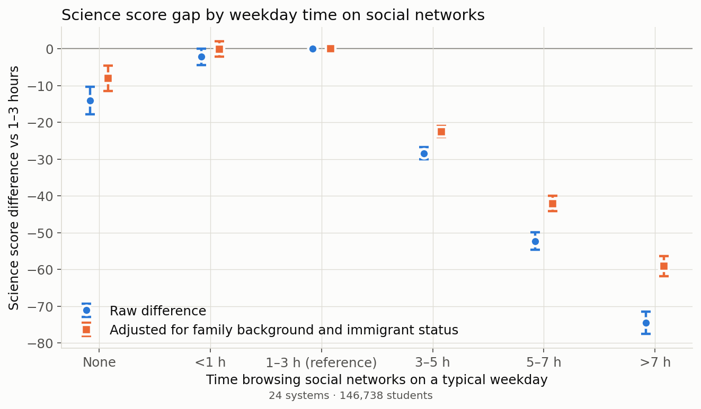
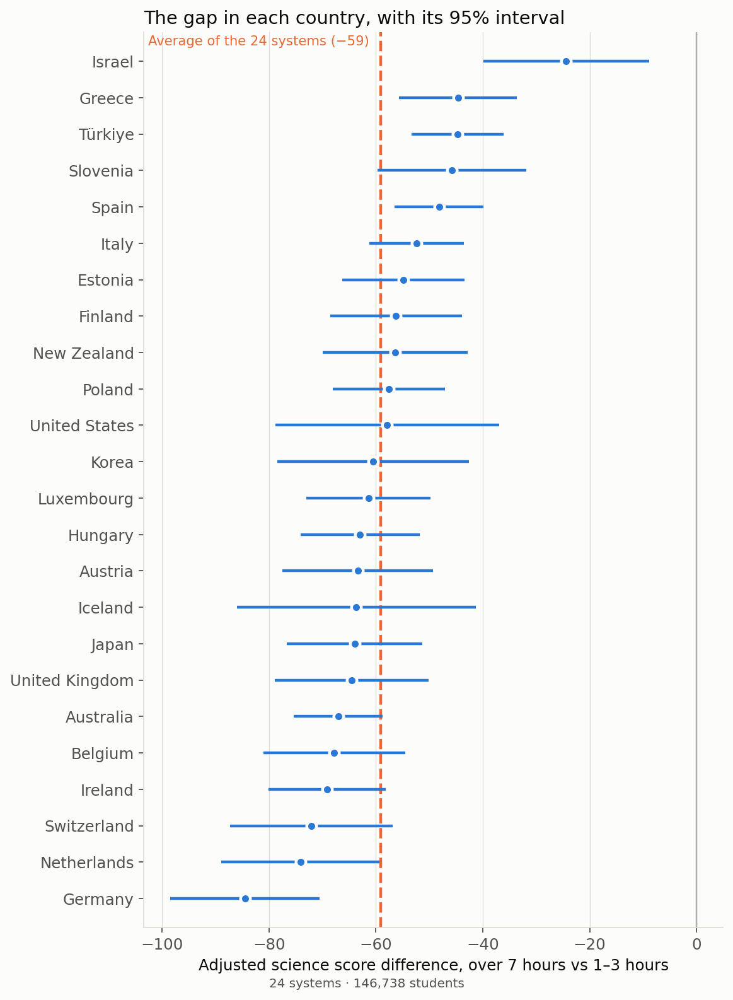
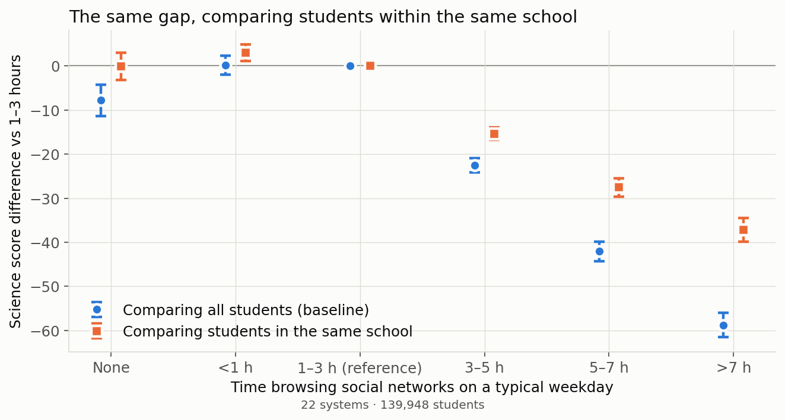
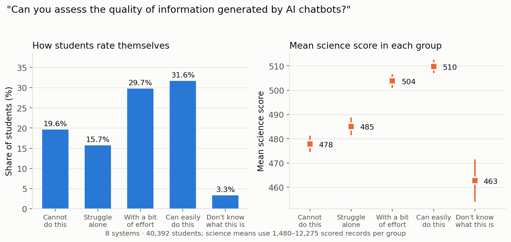
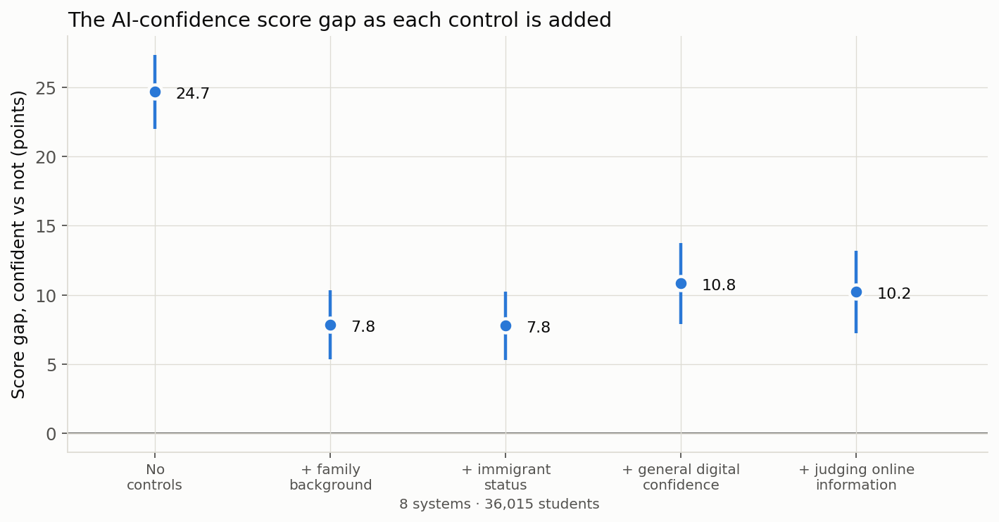

Screens, AI Confidence and Student Achievement: What PISA 2025 Can — and Cannot — Tell Us
PISA 2025 asked 15-year-olds how much time they spend on social networks on a typical weekday, and how well they can judge the information AI chatbots give them. This article looks at how both answers relate to science scores in the OECD's public data. Every result is a correlation from one survey taken at one point in time. None of it shows what screens or AI do to learning.
Key findings
- Heavy social-network use goes with much lower science scores. Students who spend more than seven hours a day on social networks score 59 points (95% CI 56 to 62) below students who spend one to three hours. This compares students within the same country and adjusts for family background.
- The gap appears in every country studied. All 24 OECD systems show it.
- Part of the gap goes with the school a student attends. Comparing only students in the same school, it falls to 37 points (95% CI 35 to 40).
- The score advantage of AI-confident students shrinks once family background is counted. Students who say they can judge chatbot output score 24.7 points (95% CI 22.0 to 27.4) higher than students who say they cannot. Accounting for family background leaves 7.8 points (95% CI 5.3 to 10.3).
- Who feels confident depends on background. 49% (95% CI 47 to 50) of students in the least advantaged quarter say they can judge AI output, against 77% (95% CI 76 to 78) in the most advantaged quarter.
- No clear sign that chatbot use helps confident students more. The estimated difference is small and its interval includes zero.
How to read the numbers
- Score differences are in PISA science points unless stated otherwise.
- The range in brackets is a 95% confidence interval (CI). It reflects sampling and measurement uncertainty for the countries included.
- Every estimate is computed separately inside each country and then averaged across countries with equal weight, as the OECD does for its own averages. Students are only ever compared with students in the same country.
- "Family background" is the OECD's index of economic, social and cultural status (ESCS). It is not household income.
- A "system" is a country or economy that PISA samples on its own.
The statistical details are in the methods and appendix.
What this analysis can and cannot show
This is an independent analysis of the PISA 2025 public-use file. It is not peer reviewed and it is not an OECD publication. Everything here is an association measured at one moment. The data cannot tell whether social media harms learning, whether struggling students turn to their phones, or whether something else drives both. Where a result fits several explanations, the article says so.
It asks three questions:
- How does weekday social-network time relate to science scores within a country, and how much of that is family background?
- How much of the gap remains when students are compared only with others at the same school?
- Does confidence in judging AI chatbot output measure something specific to AI, or general self-assessment?
Who is in the data
PISA 2025 results were released on 8 September 2026. The public student file holds 755,721 records from 90 education systems. The OECD's results report covers 91 countries and economies; this analysis did not establish why the two counts differ.
Most of those students are not in this analysis. The social-network question belongs to the optional ICT familiarity questionnaire, so many systems have no valid answers to it and others have answers for only part of their sample. The screen-time results therefore cover 146,738 students in 24 OECD systems. The AI questions reach fewer: 36,015 students in 8 OECD systems. Each figure states its own sample.
Coverage is uneven. Weighted valid answers to the social-network question range from 6.1% of students in the file in the United Kingdom to 96.2% in Korea. The OECD also warns that more than 40% of responding students in the United States were not given the student questionnaire at all. The robustness checks below test whether this matters.
One limit is built into the file. It gives every non-answer the same missing code, whether the question was not asked, skipped by design, invalid or left blank. So a student who was never asked cannot be told apart from one who did not answer. No missing answer is treated as zero.
Social-network time and science scores


Before any adjustment, students who spend more than seven hours a day score 74 points (95% CI 72 to 77) below the one-to-three-hour group. Adjusting for family background and immigrant status, on exactly the same students, leaves 59 points (95% CI 56 to 62). The adjustment reduces the gap by 15.4 points (95% CI 14.2 to 16.6).
The pattern is not a straight line. Students who report no social-network time at all also score below the one-to-three-hour group, by 8.1 points (95% CI 4.6 to 11.5). Students on less than an hour score about the same as that group: −0.1 points (95% CI −2.1 to 2.0), an interval that includes zero. Beyond three hours the gap widens steadily, to 42 points (95% CI 40 to 44) at five to seven hours and 59 points (95% CI 56 to 62) above seven. The data show no threshold and no "safe" number of hours.
The same pattern holds in the other two subjects, on the same students: 54 points (95% CI 51 to 57) in reading and 59 points (95% CI 56 to 61) in mathematics. The subjects were not tested against each other, so none should be called more affected than another.
The gap appears in every country


The average is not driven by a few countries. All 24 OECD systems show a negative gap, and in every one the interval excludes zero. The size varies: the median is about 61 points, from roughly 84 in Germany to 24 in Israel.
Robustness checks
The result barely moves when the sample or the model changes:
| Check | Gap, over seven hours vs one to three |
|---|---|
| Main estimate, 24 systems | 59 points (95% CI 56 to 62) |
| Leave out systems with an official OECD sampling caution | 59 points (95% CI 56 to 61) across 21 systems |
| Leave out systems where valid answers cover less than 60% of students in the file | 61 points (95% CI 58 to 63) across 21 systems |
| Leave out one system at a time (24 runs) | between about 58 and 61 points |
| Let family background have a curved effect | changes the gap by less than 0.2 points |
| Add gender, in the 16 systems that release it | changes the gap by 0.01 points; the interval includes zero |
The 60% threshold was fixed before any model was estimated.
Comparing students in the same school
Adjusting for family background does not account for anything that differs between schools: intake, peers, resources, tracking or neighbourhood. So the same gap is also estimated comparing students only with others in the same school. This needs a school identifier, which two systems do not release, so it uses 22 systems and 139,948 students.


On this sample, the gap across all students is 59 points (95% CI 56 to 62). Within the same school it is 37 points (95% CI 35 to 40), smaller by 22 points (95% CI 20 to 23). That difference is the part of the gap that goes with which school a student attends. It compares two models on the same students; it does not split the gap into school causes and student causes.
This narrows the possible explanations but does not settle them. Students are not randomly assigned to schools, peer groups differ inside schools too, and nothing here rules out that struggling students turn to their phones rather than the reverse. What it does show is that the gap is not just a matter of which schools students attend.
Confidence in judging AI, and chatbot use
PISA 2025 asked students how well they can "assess the quality of information generated by Artificial Intelligence chatbots". Answers run from "I cannot do this" to "I can easily do this", plus a fifth option: "I don't know what this is."


31.6% (95% CI 31.1 to 32.2) of students say they can easily do this. Only 3.3% (95% CI 3.1 to 3.5) say they don't know what it is, but that group has the lowest average science score of all: 463 (95% CI 454 to 472). That is below even the students who say they cannot do it, at 478 (95% CI 475 to 481). So the question does not sit on a clean ability scale with "don't know" at the bottom.
Does the confidence gap survive controls?
Below, "confident" students are those who say they can judge AI output with a bit of effort or easily; the comparison group says they cannot or struggle alone. Confident students score 24.7 points (95% CI 22.0 to 27.4) higher. Figure 5 adds controls one at a time, always on the same students:
- No controls: 24.7 points (95% CI 22.0 to 27.4).
- Plus family background: 7.8 points (95% CI 5.3 to 10.3), a fall of 16.8 points (95% CI 15.6 to 18.0).
- Plus immigrant status: almost no change.
- Plus general digital confidence (the average of eleven other self-ratings from the same set of questions): the gap rises by 3.0 points (95% CI 1.5 to 4.6).
- Plus confidence in judging online information in general (the same question without AI): 10.2 points (95% CI 7.2 to 13.2).


Restricting to students who answered all eleven general items gives 9.8 points (95% CI 6.6 to 13.0), so the result does not depend on who answered the full set.
So most of the raw gap disappears once family background is included, and about 10 points remain after every control available here. These are comparisons between models, not a measure of what family background or confidence causes. Whether the remaining gap reflects anything specific to AI cannot be settled here: the general digital-confidence index is exploratory, not a validated scale.
Confidence itself tracks background. 49% (95% CI 47 to 50) of students in the least advantaged quarter (by family background, within their country) say they can judge AI output, against 77% (95% CI 76 to 78) in the most advantaged quarter: a gap of 28 percentage points (95% CI 27 to 30). This is a gap in how students rate themselves, not a measured skill gap.
Does chatbot use help confident students more?
A common worry is that AI tools widen existing gaps: frequent use might pay off for students who can judge the output and not for those who cannot. The data allow a direct test on students who answered both questions. The interaction between weekly chatbot use for learning and confidence is −2.4 points (95% CI −7.5 to 2.7), and −1.5 points (95% CI −6.2 to 3.2) after adjusting for background.
Both intervals include zero, so there is no clear evidence of a difference in this sample. That is not evidence that no difference exists: the sample is small enough to miss a moderate one. Among lower-confidence students, weekly users score 8.7 points (95% CI 4.3 to 13.1) higher than other students. Both are things students reported about themselves, so this is not a gain from using chatbots.
What could change these conclusions
- Reverse direction. Struggling students may browse more. Nothing here rules that out, and it is at least as plausible as the other way round.
- Other differences between students. The models account for family background and immigrant status only. The within-school comparison removes differences between schools, not between students.
- Self-reports. Screen time and AI confidence are both self-reported, so both are measured with error, and that error may itself relate to achievement.
- Who answered. The ICT and AI questions were not given to everyone, and the file cannot separate students who were never asked from those who did not answer.
- Many comparisons. The analysis is exploratory. The specification was fixed before any model was estimated, but after the data were checked for coverage. It was not preregistered, and the intervals are not corrected for the number of comparisons.
- Few countries for AI. The AI results come from 8 OECD systems. They describe those systems, not the OECD as a whole.
How this relates to earlier work
That leisure screen time goes with lower achievement is well established; the OECD's Finite Time to Learn and Play covers the wider question.
The OECD's own first report on PISA 2025 also looks at devices and AI. Chapter 4 of PISA 2025 Results (Volume I), published on 8 September 2026, reports that:
- science scores are highest among students who use devices for leisure at school for up to an hour a day, and lower the longer they use them beyond that;
- in most systems, students who do not use AI chatbots for specific schoolwork tasks score higher than students who do, while weekly users of AI "to help me learn" score about the same as non-users once socio-economic status is accounted for;
- students who use AI to learn at least weekly and are asked in lessons to assess AI-generated information score slightly higher than non-users and infrequent users, and advantaged students report such lessons more often.
The questions differ from the ones used here, but the results point the same way. Heavy leisure use goes with lower scores in both. Being taught to judge AI output (the OECD's measure) and feeling able to judge it (this article's) are both more common among advantaged students.
This analysis is narrower:
- the exposure is one question about weekday social-network browsing, not screen time in general, leisure use at school or device ownership;
- every estimate is computed within a country, never by pooling students across countries with different populations;
- the adjusted and unadjusted models use identical students;
- the within-school comparison separates which school students attend from differences inside schools;
- the AI section separates using chatbots from feeling able to judge them, which are often conflated.
Methods and data
Sample definitions, inference, coverage tables and every robustness check are in the methods and appendix. Every table behind every number above is in the data downloads, including the claim ledger that links each number in this article to the result row it came from.
PISA microdata is not redistributed here. It is available from the OECD's PISA 2025 Database, which also publishes the questionnaires, the codebook and the recoding syntax for Volume I variables.
References
- OECD (2026), PISA 2025 Results (Volume I): Future-Ready Students. Reader's Guide, reporting approach and international averages. https://www.oecd.org/en/publications/pisa-2025-results-volume-i_73451bc5-en/full-report.html
- OECD (2026), "Student school life and beyond", chapter 4 of PISA 2025 Results (Volume I): device use, AI chatbots and science performance. https://www.oecd.org/en/publications/pisa-2025-results-volume-i_73451bc5-en/full-report/student-school-life-and-beyond_861e5904.html
- OECD, PISA 2025 Database: public-use files, questionnaires, codebook and compendia. https://www.oecd.org/en/data/datasets/pisa-2025-database.html
- OECD, How to prepare and analyse the PISA database. https://www.oecd.org/en/about/programmes/pisa/how-to-prepare-and-analyse-the-pisa-database.html
- OECD, Finite Time to Learn and Play: the broader digital-leisure analysis. https://www.oecd.org/en/publications/finite-time-to-learn-and-play_edbaa4bb-en/full-report.html